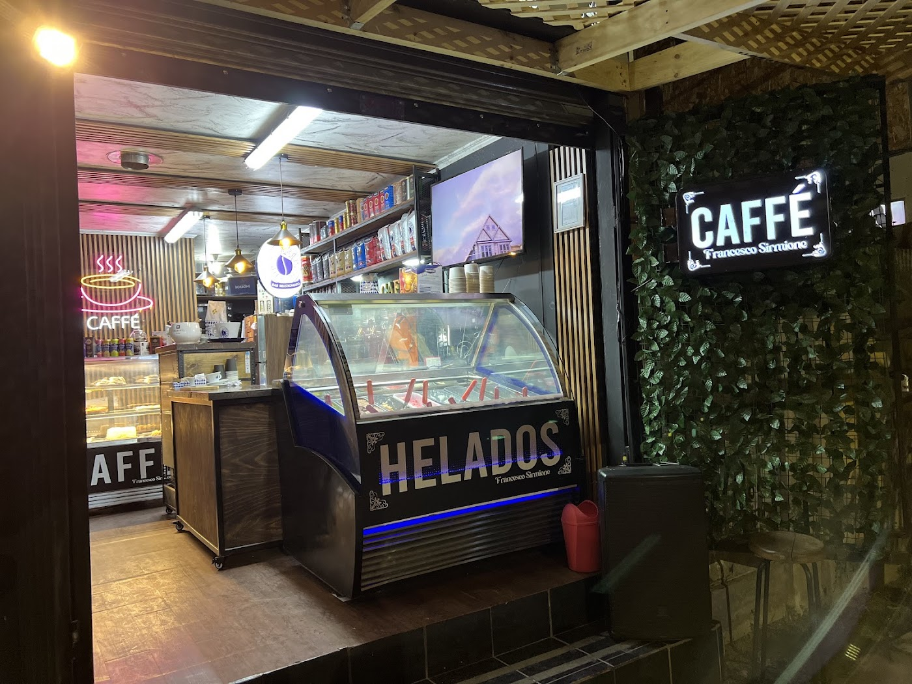
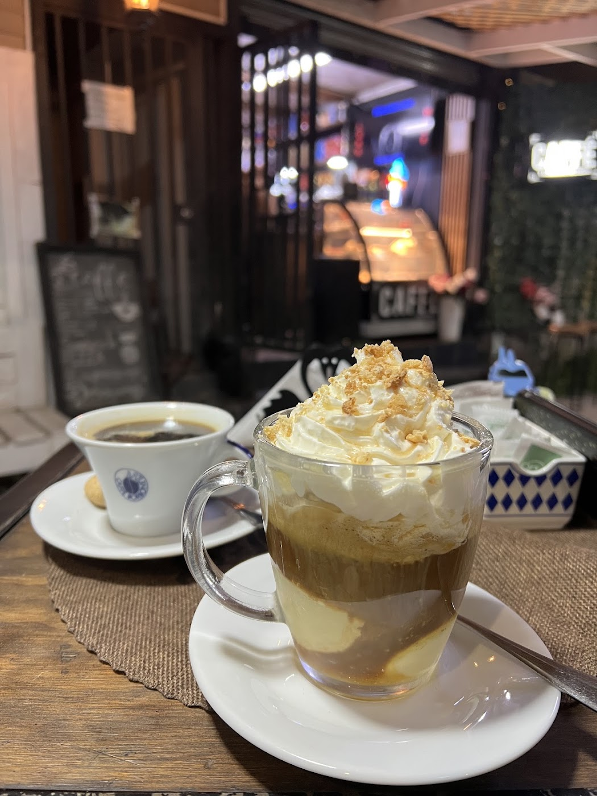
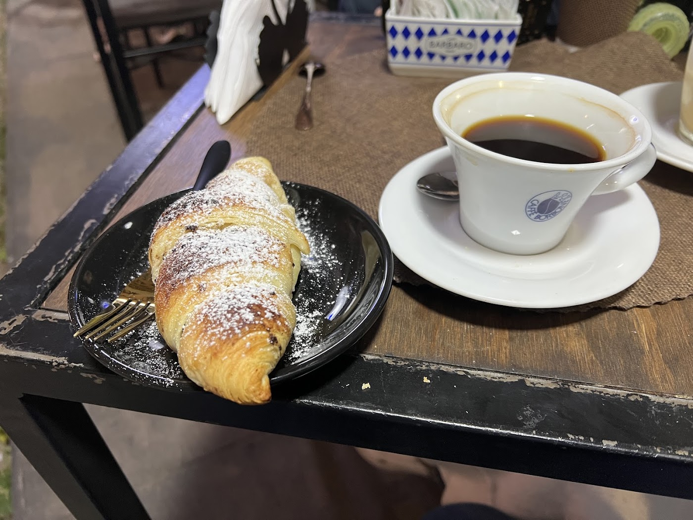
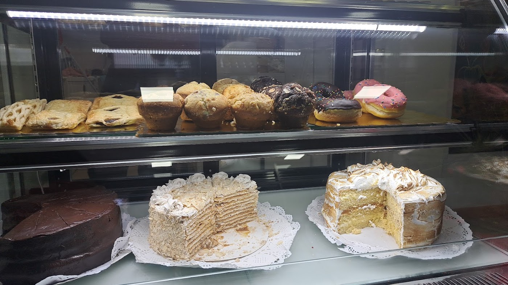

El sándwich de la casa
"Recomiendo el sándwich de la casa, un sabor que no satura" — cita textual de una reseña real.

Comida italiana · Café · Helados · Maipú
Cocina italiana de verdad, café y helados artesanales en Pje. Curaco 1567. Abrimos cuando cae la tarde.
"Recomiendo el sándwich de la casa, un sabor que no satura" — cita textual de una reseña real.
"El helado de limonada, albahaca, menta: ¡increíble!" — otra cita textual de sus reseñas.
"Un impecable café y excelente servicio", dicen sus clientes. Con música y ambiente de tarde.
Caffé Francesco Sirmione no es una cafetería de desayuno: abre a las cinco de la tarde, cuando se encienden los neones sobre el muro de hiedra y la vitrina de helados.
Adentro hay cocina italiana de verdad, café y helados hechos en casa. Y algo que sus clientes destacan: muchas veces atiende el propio dueño. "Me atendió el mismo dueño, me ayudó a escoger, todo es de mucha calidad y a buen precio", dice una de sus reseñas.



Arma tu pedido y consúltanos. Según el dato que Google recoge de 4 clientes, el gasto promedio va entre $5.000 y $10.000 por persona.
"Excelente lugar, buena música, comida italiana real, excelente café, excelente sándwich — recomiendo el sándwich de la casa, un sabor que no satura. El helado de limonada, albahaca, menta: ¡increíble!"
"Es un lugar muy acogedor, con una excelente gastronomía inspirada en Italia, un impecable café y excelente servicio."
"Muy bueno. Me atendió el mismo dueño, me ayudó a escoger, todo es de mucha calidad y a buen precio."
Pje. Curaco 1567
Maipú, Región Metropolitana
—
Horario completo por confirmar con el local.